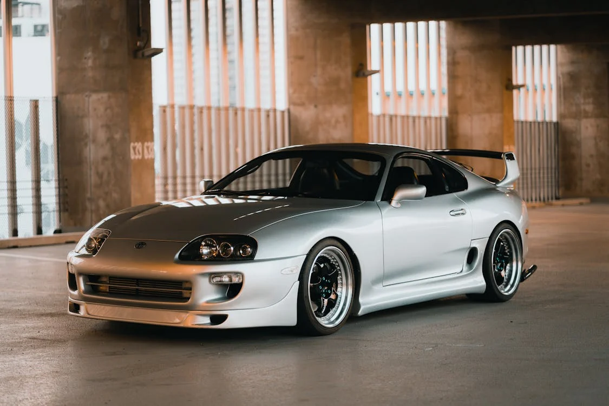
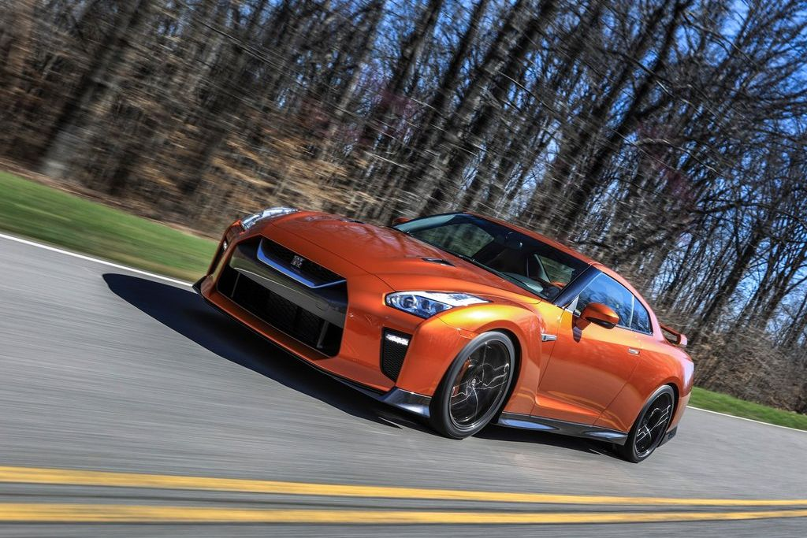
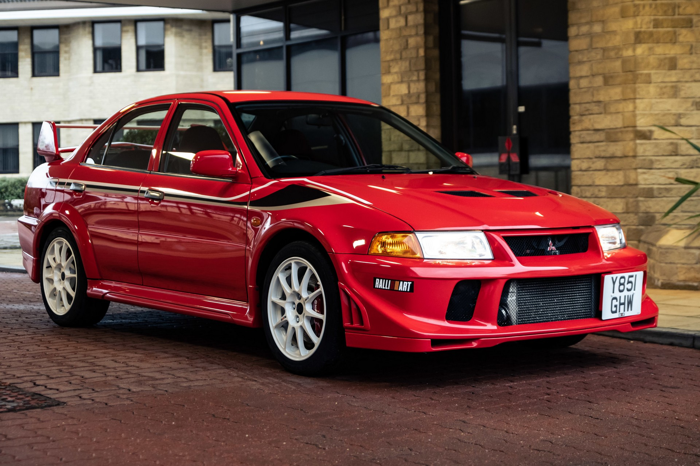

A japán autóipar a világ egyik legnagyobb és leginnovatívabb iparága, amely számos híres márkát és modellt foglal magában. Az alábbiakban bemutatunk néhányat a legismertebb jdm autókból:
 A Toyota Supra egy ikonikus sportautó, amely a 1990-es években vált híressé. Az A80 generáció különösen népszerű a tuning közösségben, köszönhetően a megbízható 2JZ-GTE motorjának, amely hatalmas teljesítményre képes. A Supra a "Halálos iramban" filmek révén is kultikus státuszt ért el.
A Toyota Supra rengeteg tuning lehetőséget kínál, a motor teljesítményének növelésétől kezdve a felfüggesztés és a karosszéria módosításáig. A 2JZ-GTE motorhoz számos utángyártott alkatrész érhető el, amelyek segítségével a tulajdonosok egyedi és erősebb autókat építhetnek.
 A Nissan Skyline GT-R egy másik legendás jdm autó, amely a 1990-es években vált híressé. Az R32, R33 és R34 generációk különösen népszerűek a tuning közösségben, köszönhetően a megbízható RB26DETT motorjának és a fejlett összkerékhajtásának.
A Nissan Skyline GT-R szintén rengeteg tuning lehetőséget kínál. A RB26DETT motorhoz számos utángyártott alkatrész érhető el, amelyek segítségével a tulajdonosok egyedi és erősebb autókat építhetnek. Emellett a felfüggesztés és a karosszéria módosításával is javítható az autó teljesítménye és megjelenése.
 A Mitsubishi Lancer Evolution, közismert nevén Evo, egy másik ikonikus jdm autó, amely a 1990-es években vált híressé. Az Evo különösen népszerű a rally versenyek világában, köszönhetően a megbízható 4G63 motorjának és a fejlett összkerékhajtásának.
A Mitsubishi Lancer Evolution szintén rengeteg tuning lehetőséget kínál. A 4G63 motorhoz számos utángyártott alkatrész érhető el, amelyek segítségével a tulajdonosok egyedi és erősebb autókat építhetnek. Emellett a felfüggesztés és a karosszéria módosításával is javítható az autó teljesítménye és megjelenése.